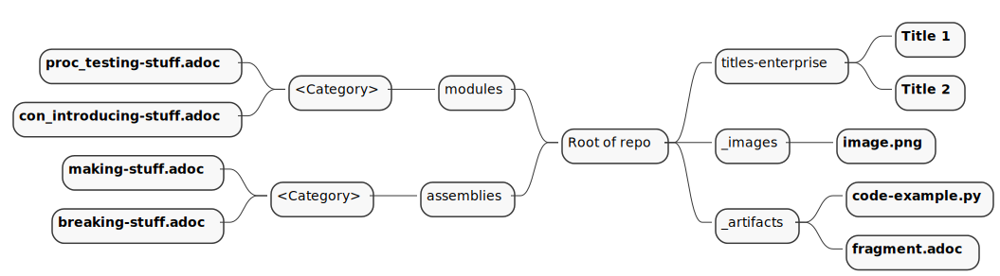

Repo Layout

-
Fork the https://github.com/pwright/repo-layout repo.
-
Edit the attributes in the
antora/modules/ROOT/pages/index.adocfile. -
Run
npm ito import packages. -
Run
make renderto create HTML.
Fork the https://github.com/pwright/repo-layout repo.
Edit the attributes in the antora/modules/ROOT/pages/index.adoc file.
Run npm i to import packages.
Run make render to create HTML.